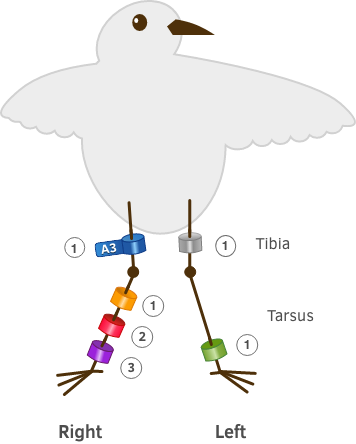

Bird details
All fields are required unless stated
Example of a bird with bands. Numbers refer to band placement (configuration)

The Banding Office collects data on marked birds only
We recommend you submit the sighting at one of the following websites:
Contact the DOC Banding Office
Email: bandingoffice@doc.govt.nz
Address: Banding Office, Department of Conservation, PO Box 108, Wellington 6140